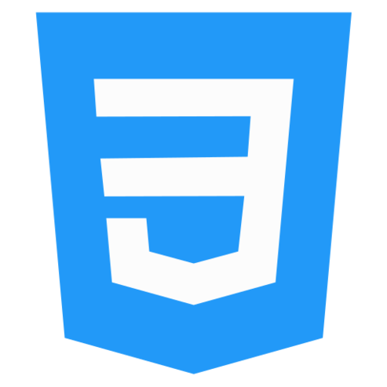
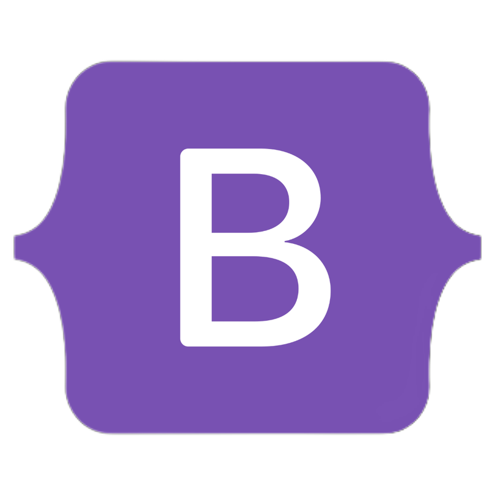
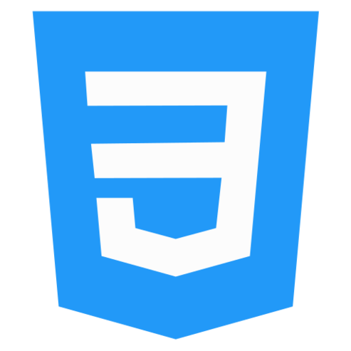
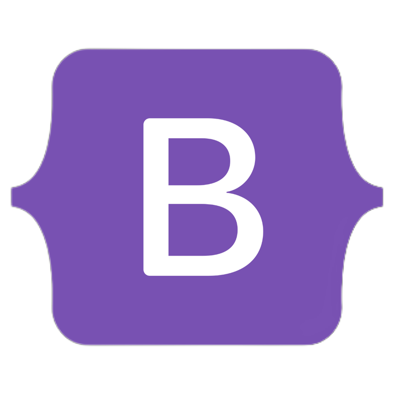

Delson Pilar
Desenvolvedor web full stack em formação. Adoro desenvolver projetos pessoais e busco sempre meu aprimoramento na área. Gosto muito de fazer a parte lógica das aplicações e estou sempre pronto para um novo desafio.
Tecnologias que trabalho
 



Projetos desenvolvidos
Adventure Seeker
Este projeto foi desenvolvido como uma prática para aprimorar as habilidades em HTML, CSS e JavaScript. O site apresenta uma série de destinos de viagem, com ênfase especial na técnica de paralaxe. Entre os destinos abordados estão Roma, Nova York e Kioto. Além disso, incorpora botões interativos que permitem ao usuário alternar entre diferentes tópicos em cada seção de texto.
Jogo do Número Misterioso
Este projeto foi desenvolvido com o propósito de desenvolver um jogo simples utilizando JavaScript. O jogo consiste em um sistema que desafia o jogador a adivinhar um número misterioso dentro de um intervalo entre 0 e 100. O usuário digita um valor e recebe feedback indicando se o valor é maior ou menor que o número secreto.
One Home
Este projeto foi desenvolvido na etapa final do ciclo de um curso. Tinha como objetivo colocar em prática os conteúdos aprendidos, bem como realizar uma homenagem aos nossos familiares por meio dos setores de uma empresa. O site foi desenvolvido usando CSS e HTML.
Ver mais projetos
Lista de tarefas
Projeto desenvolvido usando HTML, CSS e JavaScript. Trata-se de uma lista de tarefas onde o usuário pode adicionar e/ou excluir tarefas em uma lista.
Quiz de perguntas
O site trata-se de um quiz de perguntas com a temática do jogo Celeste. Desenvolvido em HTML, CSS e JavaScript o usuário pode jogar tentando acertar as perguntas sobre o jogo.
Calculadora de IMC
Projeto desenvolvido em HTML, CSS e JavaScript. Trata-se de uma calculadora de IMC, onde o usuário pode saber seu indice de massa corporal informando seu peso e altura.
Calculadora Hacker
Calculadora matemática desenvolvida em HTML, CSS e JavaScript. Este projeto contou com os calculos matemáticos feitos em JS e animações em CSS com o uso de Key Frames.
Jogo da velha
Jogo da velha desenvolvido com o uso de HTML, CSS E JavaScript. O usuário pode jogar o jogo marcando as posições desejadas. O jogo informa o vencedor e, caso ocorra, informa o impate da partida.
Carrossel 3D
Projeto desenvolvido usando HTML e CSS. Teve como foco o aprendizado na utilização e manipulação de elementos HTML em 3 dimenções usando o CSS.
Praias do Brasil
Projeto desenvolvido com enfoque princiapal na utilização da técnica de paralax. Juntamente a isso o site faz uso de animações da bibliotécao AOS, sendo construido com CSS e HTML.
Gerador de tabuada
Projeto desenvolvido em HTML, CSS e JavaScript. Trata-se de um gerador de tabuada onde o usuário insere um numero e obtém a sua tabuada do numero 0 ao 10.
Cafeteria em Paralax
Projeto desenvolvido com HTML, CSS e JavaScript, com a temática de uma cafeteria. O projeto foca no uso da técnica de paralaxe e animações da biblioteca AOS.
Carrossel - carros
Projeto desenvolvido em HTML e CSS. Trata-se de um carrosel com a temática de carros. O site permite que o usuário navege entre as imagens dispostas no carrossel por meio de botões interativos.
Cachorros Fofos
Projeto desenvolvido com o uso de HTML e CSS. Tinha como foco o uso de animações da bibliotéca AOS, quanto explorava uma temática de pets.
Portal Case
Site desenvolvido em dupla, com o uso de HTML e CSS. O projeto tinha como objetivo colocar em praticas os conceitos inciais aprendidos no desenvolvimento web.